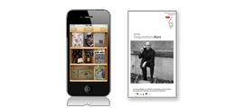

Geschmacksbilder erschließen, beschreiben und bewerten
Weingenuss ist zu aller erst ein geschmacksästhetisches Erlebnis. Die Degustation folgt konsequent einem dreistufigem Erkenntnisprozess: Fakten kennen, Ursachen verstehen, Bedeutung ableiten.
Die Teilnehmer verkosten die Weine und beschreiben, unter Anleitung, Farbe, Bouquet und Geschmack des Weins. Als Kursleiter nutze ich die Degustationsnotizen und entwickle daraus die notwendigen Theoriebausteine. Einleuchtende Erklärungsmodelle fördern das Weinverständnis, denn sie schlagen eine Brücke zwischen sensorischer Wahrnehmung und Weintheorie.
Das Äquivalenzgesetz ermöglicht Rückschlüsse vom Geschmacksbild auf den Zustand der gelesenen Beeren.
Sensorik-Weinseminar für Einsteiger
Entwicklungspotential prognostizieren, Weine klassifizieren und das Preis/Leistungsverhältnis beurteilen.
Blindproben, sind bestens geeignet, interessante Einsichten und Erkenntnisse über Wein zu gewinnen. Probieren Sie erstklassige Weine von Spitzenerzeugern verdeckt, also ohne zunächst zu wissen, wie viel der Wein kostet und was auf dem Flaschenetikett steht. Manchmal verbirgt sich in der Serie auch ein Billigwein vom Discounter (Pirat).
Der Ertrag pro Stock ist der Schlüssel, um Weine, weingesetzübergreifend zu klassifizieren: Schorle, Sorten-, Lagen- und Spitzenwein.
Geschmacksbilder klassifizieren, d.h. heißt die Absicht des Winzers und das Konzept, das dem Wein zu Grunde liegt, verstehen.
Das Sensorik-Weinseminar für Fortgeschrittene ist in Vorbereitung
Weinjournalist und Autor Laurentius Kollmann betreibt Recherche vor Ort.
Dazu reist er immer wieder in bedeutende Weinregionen um Weine mit beeindruckenden Geschmacksbildern für die Seminare einzukaufen.
Profitieren Sie vom kritischen Ansatz und der Informationstiefe der VOICE-OF-WINE Weinseminare.
Autor: Laurentius Kollmann
Inhalt: Geschmacksbilder erschließen, beschreiben und verstehen
Regelmäßige Teilnehmerbefragungen am Ende der Veranstaltung sind die Basis der statistischen Auswertung.
Die meisten Bögen werden unterschrieben zurückgegeben. Die Belege bewahre ich fünf Jahre auf. Das Ergebnis veröffentliche ich in Form einer Statistik, ich jährlich im Internet.
Die Ergebnisse werden seit 2004, in Form einer statistischen Jahresauswertung, regelmäßig im Internet veröffentlicht.
Im vergangen Veranstaltungsjahr 2011 gelang es, die hohen Erwartungen von 84 % der Teilnehmer zu erfüllen und von 14 % gar zu übertreffen. Nur 1 % der Kursbesucher gaben an, dass ihre Erwartungen an das Weinseminar nicht erfüllt wurden. 1 % machten keine Angaben. Basis: 174 Bewertungsbögen 2011)
Die Weinverkostung stimuliert unsere Sinne und ermöglicht ein geschmacksästhetisches Erlebnis der besonderen Art. Unterschiedliche Rahmenbedingungen im Weinberg (Terroirs, Rebsorten und Jahrgänge), verschiedenste kellertechnische Verfahren und nicht zuletzt die Absicht des Winzers, führen zu vielfältigen Geschmacksbildern. Keine Frage, es sind die anspruchvollen Weine auf dem Markt, die das Interesse und die Begeisterung für Wein wecken, nähren und steigern.
Im Seminar können Sie 18 verschiedene Weine aus Italien, Frankreich und Deutschland verkosten. Alle Probeweine setzen, in ihrer Klasse, Maßstäbe. Die Beschaffung solcher Spitzen ist aufwendig, denn nur eine umfangreiche Recherche im Anbaugebiet vor Ort, ermöglicht es, die „Spreu vom Weizen“ zu trennen und für die Kursteilnehmer das Beste auszuwählen.
Im Kurs probieren Sie die Weine verdeckt, also ohne zu wissen, was auf dem Flaschenetikett steht und wie viel der Wein kostet. Manchmal verbirgt sich in der Serie auch ein Billigwein vom Discounter (Pirat). Das ist nicht nur spannend, sondern ermöglicht auch verblüffende Einsichten.
Die Weine im Seminar verstehen sich als Rezensionsexemplare und werden zum Beschaffungspreis, ohne Gewinnabsicht, an die Teilnehmer abgegeben.
Weingenuss ist vor allem ein sinnliches Erlebnis. Deshalb spielt die Atmosphäre der Veranstaltungsorte eine wichtige Rolle für den Erfolg meiner Weinseminare.
Das Restaurant Zehntstadel in Leipheim (Ulm), Becker's in Trier, Hotel und Restaurant Mittermeier in Rothenburg ob der Tauber und das Hotel Goldene Krone in Brixen (Südtirol) habe ich ausgewählt, weil die Häuser ein besonders stilvolles Ambiente haben, eine vorzügliche Küche besitzen, guten Service leisten und ein erfreuliches Preis-Leistungs-Verhältnis bieten.
Premiumpakete sind Wochenend-Weinseminare, die vom Freitagabend bis Sonntagmittag dauern und in Weinanbaugebieten veranstaltet werden. Klassikpakete beginnen am Samstagnachmittag und enden am Sonntagmittag.
Unterschiedliche Rahmenbedingungen im Weinberg (Terroirs, Rebsorten und Jahrgänge), verschiedenste kellertechnische Verfahren und nicht zuletzt die Philosophie des Winzers, führen zu vielfältigen Geschmacksbildern, die den vielfältigen Präferenzen der konsumierenden Individuen entsprechen.
Grundsätzlich gibt zwei diametral entgegen gesetzte Zugänge zum Wein, die Welten trennen: Kognitiv über die Informationen zur Biographie des Weins (Flaschenetikett) oder sensorisch über das Geschmacksbild (Weinprobe). Kellermeister (Oenologen), Kenner, Spekulanten, Weintester und Sommeliers nutzen die zweite Variante.
Die Weine im Kurs werden verdeckt (blind) verkostet. Nutzen Sie die genormte Farbtonkarte nach RAL für die Kommunikation Ihrer visuellen Eindrücke (Grundfarbe, Tönung und Farbverlauf). Mit Hilfe des Weinaroma-Rades beschreiben Sie die Düfte des Bouquets. Der Verlauf im Mund gibt Aufschluss über die Zusammensetzung und Qualität der Weininhaltstoffe auf der Zunge (Struktur).
Ästhetische Maßstäbe bringen nicht nur Informationszuwachs, sondern auch Klarheit über die sensorischen Empfindungen. Die Beurteilung der Geschmacksbilder (Harmonie, Reinheit, Finesse und Substanz) ist ein wichtiger Schritt, um auf den Zustand der gelesenen Beeren (Reife, Gesundheit und Ertragsmenge pro Stock) schließen zu können.
Die konkrete Erfahrung der Weinprobe ist Voraussetzung und Ausgangspunkt für die im Kurs vermittelte Theorie. Dieser Ansatz garantiert Effektivität und Lernvergnügen gleichermaßen.
Fast spielerisch lernen die Teilnehmer, welche Methoden es gibt, Geschmacksbilder treffend zu beschreiben, die Weinqualität fundiert zu beurteilen und den Wertzuwachs durch Flaschenreife richtig zu prognostizieren. Diese Schritte schaffen die Voraussetzung, um Aroma und Geschmack von Speise und Wein kreativ zu vermählen.
Der spannende Ansatz und die kulinarische Zielsetzung machen meine Weinseminare für Feinschmecker zu einem Erlebnis, das Einsteiger und Fortgeschrittene gleichermaßen begeistert. (Mehr dazu erfahren Sie unter Punkt 10: Sicherheit und Transparenz.)
Einleuchtende Erklärungsmodelle schlagen eine Brücke zwischen Verkostungspraxis und Theorie. Neun Skripte decken alle wesentlichen Themenfelder über Wein ab. Sie können die Skripte schon vor dem Seminar vom Netz laden und sich so optimal vorbereiten. Die Skriptsammlung wird ständig weiter entwickelt und ist seit August 2007, in der dritten Generation, verfügbar.
Das Äquivalenzgesetz erlaubt Schlüsse von der individuellen Entstehungsgeschichte des Weins auf das Geschmacksbild und umgekehrt. Der Ertrag pro Stock ist der Schlüssel, um Weine, weingesetzübergreifend zu klassifizieren: Schorle, Sorten-, Lagen- und Spitzenwein.
Aus welcher Weinbergslage stammen die Trauben? Welche Rebsorte steckt hinter dem Geschmacksbild? In welchem Jahrgang wurden die Beeren geerntet?
Nur die Sensorik (Farbe, Bouquet und Geschmack) gibt Aufschluss über das Entwicklungspotential (Reserven) und ermöglicht es, die aktuelle Position auf der Lebenslinie (Zeitachse) des Weins zu lokalisieren.
Ein Diagramm gibt Überblick über die relative Stellung der Weine im Sortiment.
Die Komposition der Aromen und Geschmackskomponenten beider Partner erzeugt Mehrwert, weil sie eine neue, gesteigerte Genusserfahrung ermöglicht. So finden Weinerzeugung und Kochkunst zu ihrer wahren Bedeutung und Größe.
Bleiben Sie in Verbindung. Lesen Sie Blog-Beiträge und schreiben Sie Kommentare.
Wer Lust hat, kann VOICE-OF-WINE auf TWITTER folgen, im FACEBOOK schmökern
Freuen Sie sich auf ein abwechslungsreiches Programm, das spannenden Unterricht, Weinproben, hervorragende Küche und fröhliche Geselligkeit zu einem ganz besonderen Ereignis verbindet. Für Begleitpersonen besteht die Möglichkeit, nur am Degustationsmenü, ohne Kurs, teilzunehmen.